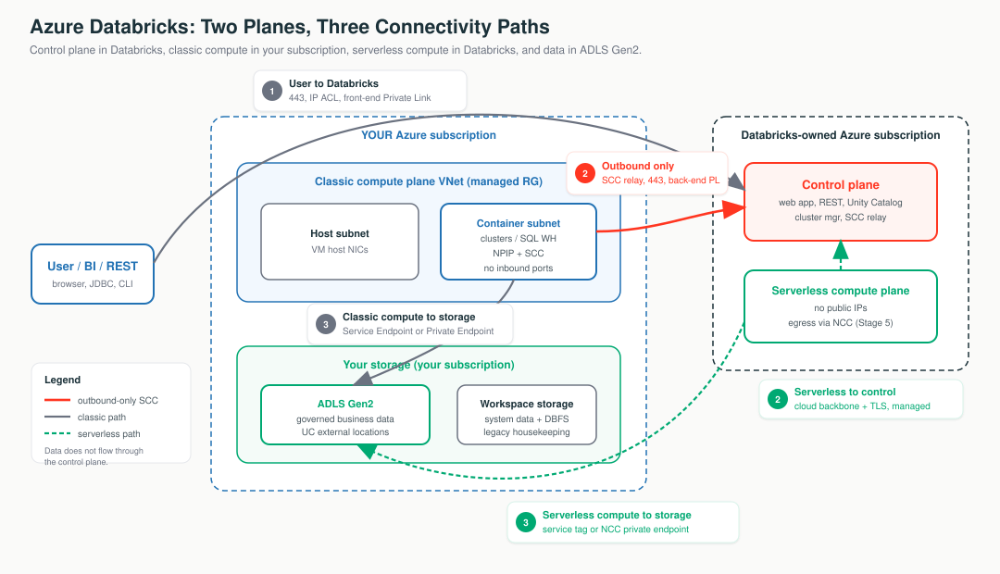

Think of Azure Databricks as an airport with exactly three doors.
The control tower. Databricks runs it in their own subscription. It directs; it never holds your cargo.
The runway and aircraft where your data is processed.
Your runway at your airport - compute in your subscription and VNet.
Rented runway at Databricks' airport - no VNet of yours.
User to Databricks - the front door.
Compute to control - the staff intercom, outbound only.
Compute to storage - the loading dock.
Lives in your ADLS Gen2 behind Unity Catalog. Never flows through the control tower.

Each tab below has its own clickable whiteboard: Two planes → Control vs Compute, Three doors → Three Paths, Deployment map → Deployment & Storage. Open a tab, then click a box to see what it does in plain English.
"Customer data stays in the customer's storage and is processed in the compute plane; the control plane holds metadata and orchestration only. Classic compute to control and all serverless traffic ride the Microsoft backbone - not the public internet."
Picture a delivery company: a dispatch office takes orders and tells drivers where to go, and the trucks actually carry the goods. Databricks splits the platform the same way - a brain that gives orders and muscle that does the heavy lifting - and the two live in different places owned by different people.
Two separate sets of machines, run by two parties, in two subscriptions.
Click each box to see who owns it and what runs there.
If the two planes are separate machines in separate subscriptions, how does the control plane "run this" on compute it can't connect into? Through a reverse tunnel via the SCC relay (which lives in the control plane):
The relay carries orchestration only - "run this," logs, status. Your business data moves directly between the compute plane and ADLS Gen2 (Door ③), never through the control plane. Serverless reaches the control plane over the Microsoft backbone + TLS instead - no relay, because there is no VNet of yours. (Full mechanism on the Secure Boundary tab.)
In classic, compute is in your VNet, so you can attach an NSG, a UDR, a firewall, or a Private Endpoint. In serverless, there is no VNet of yours, so none of those apply. That is exactly why NCC (Network Connectivity Configuration) exists - the serverless answer to "VNet controls" (Stage 5).
| Dimension | Classic | Serverless |
|---|---|---|
| Runs in | Your subscription / VNet | Databricks-owned subscription |
| Network you control | The VNet (managed or injected) | None - no customer VNet |
| VMs visible to you | Yes (in a managed RG) | No |
| Public IPs on compute | No (NPIP) | No |
| Secure egress with | NSG / UDR / NAT / Firewall / Private Endpoint | NCC + network policies |
| Startup | Minutes (VMs provision) | Seconds (pre-warmed) |
"Two planes. Databricks runs the brain in its own subscription; your data is processed in the compute plane and never leaves your storage. Classic puts compute in your VNet so you own the network controls; serverless trades that VNet for speed and uses NCC instead."
A classic workspace is labelled a "Hybrid workspace" in the Azure Portal (CLI --compute-mode Hybrid). "Hybrid" means classic compute in your subscription - it does not mean hybrid-cloud.
Think of your compute as a house with no doorbell on the outside - no one can knock and be let in. Instead, the house calls the office first, and the office only ever talks back on that call it already answered. So the compute always starts the conversation; nothing from outside can start one with it.
The platform's single most important security property is "no inbound ports." It is not magic - it is a reversed connection.
You call support; they answer on your open line. They can never call your phone. That is why "no inbound ports" is a consequence of reversing the connection, not a feature you toggle.
Serverless VMs also have no public IPs, and compute-to-control is always over the Microsoft backbone with TLS. There is no SCC relay because there is no VNet of yours.
"'No inbound ports' is not a feature we toggle - it is a consequence of reversing the connection. The cluster dials out to the relay on 443; the control plane only ever answers down that tunnel. Nothing outside can open a connection to your compute."
For classic, route egress through an Azure NAT Gateway so partners can allowlist a fixed IP. Serverless egress IPs are dynamic - pivot to the AzureDatabricksServerless service tag or NCC instead.
There are two ways to drive across town: the public roads (the open internet) that anyone can use, or Microsoft's own private toll road (the backbone) that only Azure traffic rides. Most Databricks traffic is already on the private toll road by default - it never touches the public roads.
The Microsoft backbone is Microsoft's private global network. Azure-to-Azure traffic rides it without ever touching the public internet.
A lot of Databricks traffic is already off the public internet by default:
"Public IP" here means routable over the backbone, not exposed to the open internet. Private Link removes the public-IP hop the auditor cares about. It does not "get you off the internet," because you mostly already are.
The back-end path is compute → control plane (Door ②, the cluster dialing the SCC relay on 443). SCC and back-end Private Link remove public IPs from two different ends of that same connection:
| Which end | Removed by | What it does |
|---|---|---|
| Source - your cluster VM | SCC / No Public IP | VM has no public IP and no inbound port; it only dials out. |
| Destination - the relay endpoint | Back-end Private Link | Replaces the relay's public endpoint with a Private Endpoint (databricks_ui_api) inside your VNet. |
With SCC alone, your VM has no public IP, but the address it dials is still the relay's public IP (over the backbone) - which is exactly why you keep the AzureDatabricks service tag in your egress allowlist. Back-end Private Link puts that relay behind a private IP in your own VNet, so the outbound 443 connection never targets a public address at all. That last public-IP hop is gone.
Add back-end Private Link and you no longer need the AzureDatabricks egress tag for the relay - there is nothing public to allow out to. SCC handles the source, back-end PL handles the destination; together the whole compute→control path is private on both ends.
"A lot is already off the public internet by default. Private Link and NCC just remove the last public-IP hop the auditor cares about. So let's not over-buy Private Link you don't actually need."
Customers over-buy Private Link (per-GB cost, Premium prerequisite, DNS work) to solve a problem they did not have.
Think of one building with exactly three openings: a front door for visitors, a staff intercom to call head office, and a loading dock for goods. Databricks has the same three - and almost every security control just locks down one of them.
User to Databricks - people signing in or running queries against the workspace.
Compute to control - clusters phoning head office to be told what to do.
Compute to storage - clusters reading and writing your actual data.
Secure a building and you ask exactly three questions: who comes in the front door, how staff reach head office, and how the loading dock is locked. Same three for Databricks - and almost every control protects one of them.
Click each box to see what travels through that door and how it is secured.
| # | Path | Who talks to whom | Analogy |
|---|---|---|---|
| ① | User to Databricks (front-end) | Browser, BI (JDBC/ODBC), REST/CLI to the workspace URL | Front door |
| ② | Compute to Control plane (back-end) | Cluster phoning home to be managed | Staff intercom |
| ③ | Compute to Storage (data path) | Cluster reading/writing your ADLS Gen2 data | Loading dock |
| ① User to DBX | ② Compute to Control | ③ Compute to Storage | |
|---|---|---|---|
| Direction | Inbound to control plane | Outbound from compute (SCC reverses it) | Outbound from compute |
| Classic control | IP access list / front-end PL | SCC + VNet injection, back-end PL | Storage firewall + Service/Private Endpoint |
| Serverless control | Same (front-end PL / IP ACL) | Managed backbone + TLS (no SCC) | NCC service tag / NCC PE |
| Key port | 443 | 443 (SCC) | 443 to storage |
"There are only three traffic paths: users in, clusters to control, clusters to data. We secure each one independently. When something breaks, which path failed tells us which control to inspect."
By 2026-06-09, a storage account that allowlists serverless must onboard to an Azure Network Security Perimeter (NSP) and allow the AzureDatabricksServerless.<region> service tag - the older "allow serverless subnet IDs" pattern is retiring.
When you create a workspace, Azure drops the pieces into two folders: your folder, which you fully control, and a Databricks-run folder you can look in but should not touch. And there are two separate sets of keys - one for the Azure resource, a different one for governing the data - so holding one does not give you the other.
Azure Databricks is a first-party Azure service (Microsoft.Databricks/workspaces) - sold, billed, and RBAC'd by Azure itself. One create lands resources in two resource groups.
Click each box to see who owns it after a single workspace create.
| Resource group | What it holds | Who edits it |
|---|---|---|
| Your RG | The Microsoft.Databricks/workspaces object | You (Azure RBAC, Policy, locks, tags) |
| Managed RG | Workspace storage account, managed identity, managed VNet (if not injected), cluster disks | Databricks-managed - viewable, not editable. Lock it. |
The account to workspace to metastore spine is the backbone every later lesson hangs off:
| Concern | Workspace storage / DBFS root | Unity Catalog + ADLS Gen2 |
|---|---|---|
| Governance | Workspace-scoped, coarse | Central metastore, fine-grained grants |
| Lineage & audit | None for raw paths | Full lineage + system.access audit |
| Status | Deprecated / legacy | Recommended, GA |
"Housekeeping goes in workspace storage; governed data goes in ADLS Gen2 behind Unity Catalog - never the DBFS root. And there are two role systems: Azure RBAC creates the workspace resource, but a Databricks account admin governs the account and metastore. Being Azure Owner does not make you a Databricks account admin."
Standard tier is EOL 2026-10-01 - treat Premium as baseline (Private Link, CMK, IP ACLs, CSP are Premium-only). And deleting the workspace storage account makes the workspace unrecoverable - lock the managed RG.
Do not start by memorizing ports or service tags. Start by asking which plane, which direction, and which of the three doors is involved.
| Symptom | First Thing To Think |
|---|---|
| Clusters stuck "Pending" on a fresh VNet | Is there outbound egress (NAT Gateway / UDR to firewall)? New VNets have no default outbound after 2026-03-31. |
| "We see a public IP" panic | Check the cluster VM in the managed RG - under NPIP the Public IP field is empty. |
| Intermittent control-plane loss after firewall lockdown | Did they allowlist the SCC relay by raw IP instead of FQDN? |
| Serverless can't reach firewalled storage | Is the NCC bound, with the AzureDatabricksServerless.<region> service tag or NCC PE allowed? |
| "Private now" but ADLS still public | Path ③ forgotten - is storage still "Enabled from all networks"? |
Jobs/notebooks fail on dbfs:/ paths | New accounts ship without DBFS root - migrate to a UC volume / external location. |
| "I'm Owner but can't admin the account/metastore" | Wrong role system - Azure RBAC creates the resource; a Databricks account admin governs the account. |